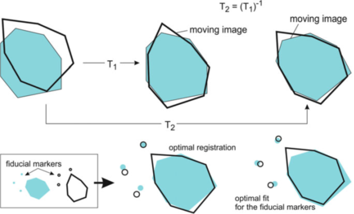

Topic 1.5: Validation in medical image analysis (Registration)
This notebook combines theory with questions to support the understanding of validation metrics in medical image analysis. Use available markdown sections to fill in your answers to questions as you proceed through the notebook.
Contents:
Validation (concepts)
1.1 Ground truth
Ground truth from real data
Ground truth from phantoms
Data representativeness
Statistical significance
1.2 Measures of quality
Registration - quality measures
References:
[1] Measures of quality: Toennies Klaus, D. Guide to Medical Image Analysis - Methods and Algorithms, Chapter 13.1
[2] Ground truth: Toennies Klaus, D. Guide to Medical Image Analysis - Methods and Algorithms, Chapter 13.2
[3] Limitations of performance metrics: Reinke et al. Common Limitations of Image Processing Metrics: A Picture Story.
[4] Assessment of registration errors: Fitzpatrick, M. Visualization, Image-Guided Procedures and Modeling, 7261:1–12, SPIE Medical Imaging (2009).
[1]:
%load_ext autoreload
%autoreload 2

1. Validation (concepts)
Validation of medical image analysis methods is the estimation of correctness of certain results from tests of a method on a representative sample set. In e.g. software design, validation is the evaluation of the degree to which user needs (performance requirements) are met, i.e. whether the right software is being built. In medical image analysis, we usually talk about technical validation, where the aim is to evaluate the performance of computing algorithms with respect to e.g. segmentation accuracy. Validation is used in various image computing classes (registration, segmentation, detection, classification, quantification).
Prior to performing validation, suitable data needs to be selected, comparison measures need to be chosen, and a norm (e.g. ground-truth, explained below) needs to be defined. Remember that every validation study must have a hypothesis on performance (e.g. outcome is better than…), and a ground truth (gold standard) is essential. Validation can provide information about our method with respect to another method used to generate the same results (cross-validation). It is mandatory to document a detailed description of the validation procedure together with a well-founded justification of selected measures, as it allows potential new users of the method to investigate the validity of the arguments used to build the validation scenario.
1.1 Ground truth
“In medical image analysis, the truth is difficult to come by, since the reason for producing images in the first place was to gather information about the human body that cannot be accessed otherwise.”
Ground truth is a conceptual term relative to the knowledge of the truth concerning a specific question (the “ideal expected result”). In validation, all measures of quality estimation for an analysis method require comparison of the method’s produced results with the true information. Ground truth data can be either real or artificial, however, it is never completely certain whether selected data are representative of the desired ground truth. See also chapter 13.2 of the Guide to Medical Image Analysis by Tonnies, Klaus D
Ground truth from real data
Ground truth based on real data can be created by applying the currently established best method to it if such method exists at all. An example is the use of mutual information and spline-based non-rigid registration for registering MR brain images. An often encountered problem is proving that the conditions under which a standard is applied, are comparable with those conditions under which they are considered to be an established standard. Moreover, the implementation of the established methods is rarely available, even though these days, more implementations become open-source or integrated in widely used freely downloadable software packages.
If an established method is missing, human experts may help produce ground truth data through manual data annotation. This approach requires a lot of effort both from the method’s developer, as well as the expert who has to carry out the analysis on several datasets, document findings, and sometimes it is desirable to have the expert analyze the data(sets) multiple times (intra-observer variability) to increase the significance of the results. The developer must provide a sufficiently good user interface for the expert to avoid bias by the input component quality. Sometimes it may be more beneficial to ask more experts and measure (inter-observer) variability. In such case, it is crucial to define what is meant by agreement among all (e.g. agreement by all / the majority of observers, etc.).
Ground truth from phantoms
Phantoms can be used as ground truth as well. They are classified as follows:
Based on real data
cadaver phantoms (human or animal)
artificial hardware phantoms (e.g. CT and MRI slices generated in the Visible Human Project)
Based on simulated data
software phantoms representing the reconstructed image or the imaged measurement distribution
mathematical simulations (e.g. Shepp-logan phantom)
Phantoms are characteristic for specific properties (material, measurement properties, influences from image reconstruction, shape properties), according to which they are applied in different tasks. Phantoms are only useful in validation analyses when results have been generated in them. For a detection task, a couple of locations must be specified, and for registration tasks, fiducial markers have to be implanted, for example. Material and measurement properties are often idealized. Image artefacts are typically simulated, e.g. by using zero-mean Gaussian noise to simulate detector noise; smoothing data to evoke partial volume effects or through inclusion of artificial shading to model signal fluctuations.
The advantage of a software phantom is that it is more straightforward to account for anatomical variation by creating several phantoms with different shapes, unlike in hardware phantoms, where anatomical variation can hardly be modelled. Examples of software phantoms include the BrainWeb phantom; the Field II ultrasound simulation program; the XCAT phantom; or the dynamic MCAT heart phantom simulating a moving heart.
Data representativeness
To make a (ground truth) dataset representative, all data properties that may have an impact on the performance of an analysis method should be reflected in it. Representativeness can be enforced by:
separation between test and training data (leave-one-out technique in classification tasks); if optimal parameters have to be determined for a method, it is unacceptable to validate the results on ground-truth data which has been used to arrive at the optimal parameter value
identification of sources of variation (all should be covered by the ground truth data) and outlier detection (experts can help)
robustness with respect to parameter variation (e.g. changes in input thresholds)
Statistical significance
While your analysis results may seem satisfactory, there is a chance that they are statistically insignificant due to low number of samples in your validation set. Significance of an experimental outcome can be indicated by the well-known \(p\)-value. For example, the probability of less than \(1\%\) that a result arose by chance would be expressed as \(p < 0.01\). Significance can be calculated via the Student’s t-test, which helps you find out if there is a statistical difference between two compared groups.
1.3 Measures of quality
Quality is determined by the kind of analysis which has been conducted on a dataset:
Task |
Quality measure |
|---|---|
Segmentation |
Correspondence between the segmented object and a reference segmentation |
Registration |
Deviation from the correct registration transformation |
Computer-aided detection (CAD) |
Ratio between correct and incorrect decisions |
See also chapter 13.1 of the Guide to Medical Image Analysis by Tonnies, Klaus D
Registration - quality measures
Registration aims to find a geometric transformation that maps an \(n\)-dimensional image onto another one, bringing both images into alignment. In case of different dimensionalities of the registered objects, the transformation includes a projection step of the scene from higher dimension to the scene of lower dimension. The steps to evaluate registration accuracy when working with point-based registration are explained in section 1 of notebook 1.2.
The quality of a registration method can be measured as the average deviation of known transformation parameters based on comparisons between vector fields (for non-rigid registration) or differences in global rotation and translation (for rigid transformation). Another way of assessing quality for a registration task is to compute locations of fiducials after registration, however, one should never use the same corresponding point pairs/fiducials or image similarity metric were used for optimization when computing the registration transformation!
We use Fiducial Localization Error (FLE), Fiducial Registration Error (FRE) and Target Registration Error (TRE) to evaluate registration accuracy:
FLE quantifies the error in determining the location of a point which is used to estimate the registration transformation.
FRE is the error of the fiducial markers following registration, i.e. \(\vert\vert\,T(\mathbf{p_{f}}) - \mathbf{p_{m}})\vert\vert\), where \(T\) is the estimated transformation and \(\mathbf{p_{f}}\), \(\mathbf{p_{m}}\) are the points that were used for estimation.
TRE computes the error of the target fiducials following registration, i.e. \(\vert\vert\,T(\mathbf{p_{f}}) - \mathbf{p_{m}})\vert\vert\), where \(T\) is the estimated transformation and \(\mathbf{p_{f}}\), \(\mathbf{p_{m}}\) are the points that were not used for estimation.
It is important to remember that FRE should never be utilized as a surrogate for TRE as the two error measures are uncorrelated given a specific registration task. Typically, we can only estimate the distribution of TRE as it is spatially varying. A good TRE depends on using a good fiducial configuration. More information on FRE and TRE can be found in this article.
If the transformation is unknown, image similarity metrics (see notebook 1.3), and the Structural Similarity Index (SSIM) can be used. The SSIM is a perceptual image quality measure indicating whether two images are very similar or the same (a value of \(+1\)) or very different (a value of \(-1\)).

Figure from Guide to Medical Image Analysis - Methods and Algorithms